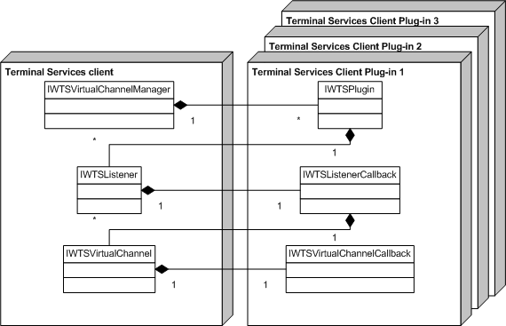

To write a dynamic virtual channel (DVC) client module, you must first implement and register a Remote Desktop Connection (RDC) client plug-in. The DVC plug-in is an implementation of IWTSPlugin, registered as a Component Object Model (COM) object.
[!Note]
The plug-in must be implemented in a free-threading model. Apartment-model implementation is not supported.
The following is a list of interfaces that are implemented by objects that are instantiated by the plug-in.
| Interface | Description |
|---|---|
| IWTSPlugin | Allows for the Remote Desktop Connection (RDC) client plug-in to be loaded by the Remote Desktop Connection (RDC) client. |
| IWTSListenerCallback | Notifies the Remote Desktop Connection (RDC) client plug-in about incoming requests on a particular listener. |
| IWTSVirtualChannelCallback | Receives notifications about channel state changes or data received. Each instance of this interface is associated with one instance of IWTSVirtualChannel. |
The following is a list of interfaces that are implemented by objects that are instantiated by the Remote Desktop Connection (RDC) client, and are part of the framework.
| Interface | Description |
|---|---|
| IWTSVirtualChannelManager | Manages all Remote Desktop Connection (RDC) client plug-ins, DVC listeners, or static virtual channels. |
| IWTSListener | Manages configuration settings for each listener for the DVC connection. |
| IWTSVirtualChannel | Controls the channel state, as well as writes on the channel. |
The following illustration shows the relationship between the Remote Desktop Connection (RDC) client and the Remote Desktop Connection (RDC) client plug-in.
